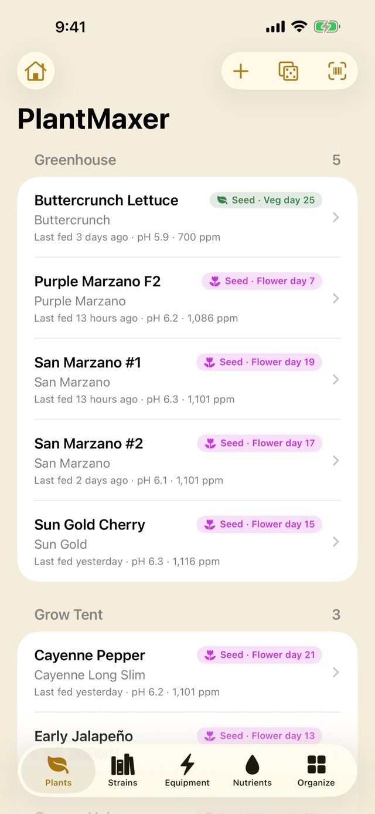
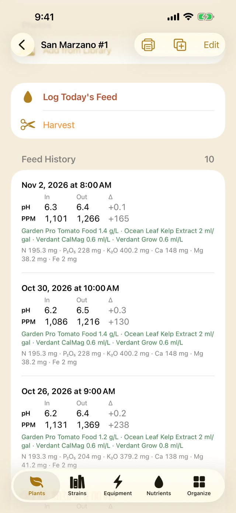
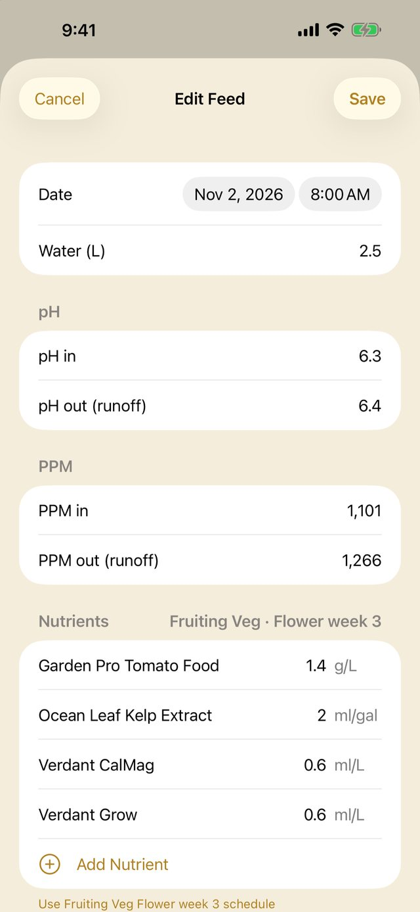
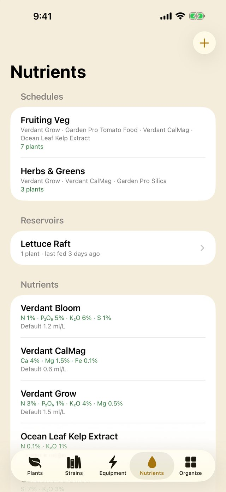
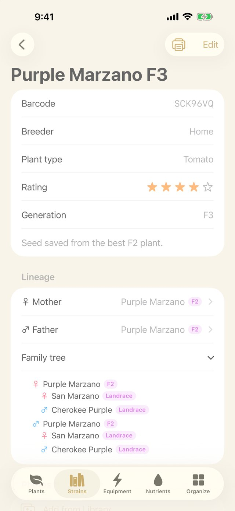
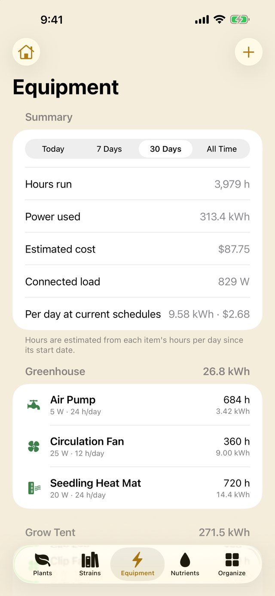
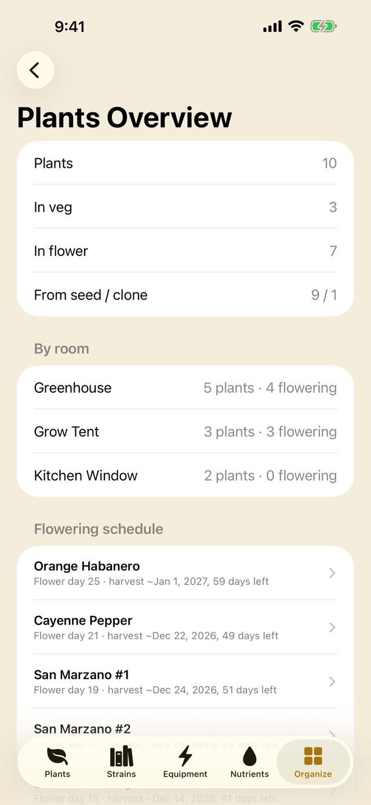
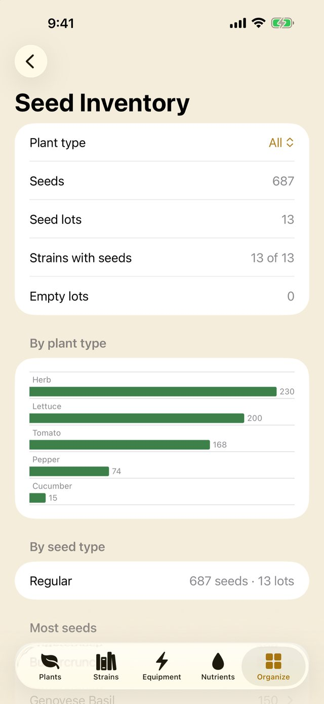

PlantMaxer
Your garden's grow journal.
PlantMaxer is a grow journal for vegetables, herbs and houseplants. Log every feed, follow nutrient schedules, record harvests and keep your seed collection organised, indoors or out.
Take a look








What PlantMaxer does
Plants by room
Organise plants by greenhouse, tent or windowsill and see each one's stage, age and last feed at a glance.
Feed logging
Record water, pH and PPM in and out, plus every nutrient dose, in a few taps, or copy the last feed.
Room feeds and reservoirs
Feed a whole room or reservoir at once and every plant on it is updated.
Nutrient schedules
Build your nutrient library and week-by-week schedules. New feeds fill in automatically, with the N-P-K that went in.
Bluetooth climate sensors
Connect Govee H5075 sensors to log temperature and humidity by room, with charts and VPD worked out for you.
Climate readings
Add temperature, humidity, CO₂, light and leaf temperature by hand when you don't have a sensor.
Photos and timelapse
Take progress photos and play them back as a timelapse.
Harvests
Harvest a plant to move it into the archive, keeping its full feeding history for next season.
Seeds and varieties
Track varieties, parent lineage, seed lots and storage boxes, and let PlantMaxer pick a random variety to grow next.
Labels and scanning
Print barcode labels with AirPrint or as a PDF, and scan them to jump straight to a plant, seed lot or box.
Equipment costs
Track lights, fans and heat mats with power-use charts and running costs from your electricity rate.
Reports
Seed inventory, seeds by box, a shareable spare seeds list, a plants overview and a weekly feeding report.
iCloud sync and backups
Sync between iPhone and iPad through your private iCloud, with full backups and spreadsheet import and export.
Your privacy
No accounts, ads, analytics or tracking. Your data stays on your devices and in your own private iCloud.